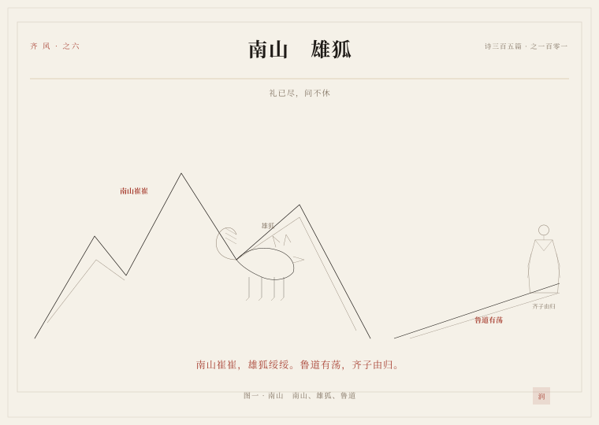
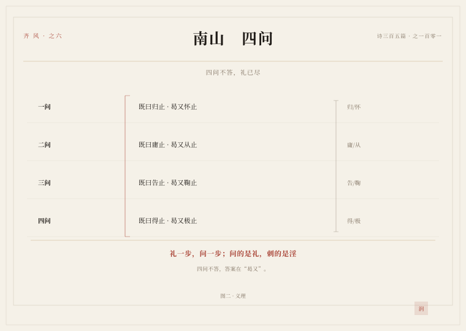

第一百零一篇 南山
齐风 · 之六 SJ101
朗读 · 普通话
依经文原文朗读，章次不读出；配古琴底乐，不改速、不加拖腔。全库同一音色（豆包 TTS），非播音员录制。
一 解题
诗三判：
- 谁在说：齐大夫。他见襄公与妹文姜淫乱，作诗刺之；前二章刺襄公，后二章责鲁桓不能防闲。
- 说什么事：四章四问。由“归”问到“怀”，由“庸”问到“从”，由“告”问到“鞠”，由“得”问到“极”；礼一步，问一步。
- 为何编在此：100 写“公朝失序”，101
写“公室失伦”。一朝一伦，齐风之刺由政入淫。
《毛序》：“《南山》，刺襄公也。鸟兽之行，淫乎其妹，大夫遇是恶，作诗而去之。”
朱子《诗集传》：“比也。南山，齐南山也。崔崔，高大貌。狐，邪媚之兽。绥绥，求匹之貌。鲁道，适鲁之道也。荡，平易也。齐子，襄公之妹，鲁桓公夫人文姜，襄公通焉者也。由，从也。妇人谓嫁曰归。怀，思也。止，语辞。言南山有狐，以比襄公居高位而行邪行；且文姜既从此道归乎鲁矣，襄公何为而复思之乎？……此诗前二章刺齐襄，后二章刺鲁桓也。”
本库的看法：《南山》是一首把“淫”写成“问”的诗。
诗不直骂，只问四句：“既曰归止，曷又怀止？”“既曰庸止，曷又从止？”“既曰告止，曷又鞠止？”“既曰得止，曷又极止？”问得越合礼，刺得越深。
南山、雄狐是比；葛屦、冠緌是比；蓺麻、析薪是兴。比兴层层，只为把“礼已尽”与“人又越”对拉。
先辨五事：“南山”是齐国南山，不是终南山；“雄狐”是邪媚求匹之喻，不是狐精；“齐子”是文姜，不是齐女泛称；“五两”是五双葛屦，不是五斤；“怀”是思，不是“怀胎”。
二 经文
第一章
南山崔崔，雄狐绥绥。
鲁道有荡，齐子由归。
既曰归止，曷又怀止？
第二章
葛屦五两，冠緌双止。
鲁道有荡，齐子庸止。
既曰庸止，曷又从止？
第三章
蓺麻如之何？衡从其亩。
取妻如之何？必告父母。
既曰告止，曷又鞠止？
第四章
析薪如之何？匪斧不克。
取妻如之何？匪媒不得。
既曰得止，曷又极止？
分章：四章，章六句。
三 韵读
- 一章：崔、绥、归、怀，微部。
- 二章：两、双、庸、从，东部。
- 三章：亩、母，之部；告、鞠，觉部。
- 四章：克、得、极，职部。
读法：微部回环，东部宽，之觉转折，职部收；四问越问越紧，韵越收越短。
四 字义与名物
- 崔崔：高大貌。绥绥：求匹之貌；一说匹行之貌。
- 鲁道：通向鲁国的道路；荡：平易。
- 齐子：文姜；由：从；归：嫁。
- 怀：思；止：语辞。
- 葛屦五两：五双葛鞋；葛屦贱，五两为奇数。冠緌双止：冠缨必双；以双配奇，喻兄妹不当配。
- 庸：用；从：相从。
- 蓺麻：种麻；衡从：横纵耕治。鞠：穷。
- 析薪：劈柴；匪斧不克：无斧不能；媒：媒人；极：穷。
五 今译
南山高大，雄狐求匹。鲁道平坦，文姜从这条道嫁到鲁国。既已嫁了，为何又思念？
葛鞋五双，冠缨成双。鲁道平坦，文姜从这条道嫁了。既已嫁了，为何又相从？
种麻怎么办？先横纵耕治田亩。娶妻怎么办？必先告父母。既已告了，为何又穷其欲？
劈柴怎么办？无斧不能。娶妻怎么办？无媒不得。既已得媒了，为何又穷到极处？
六 章旨
- 一章：以南山、雄狐比襄公居高位而行邪。“归”是礼，“怀”是越。
- 二章：以葛屦、冠緌比兄妹不当偶。“庸”是用礼，“从”是越。
- 三章：以蓺麻起兴，言娶妻必告父母。“告”是礼，“鞠”是越。
- 四章：以析薪起兴，言娶妻必用媒。“得”是礼，“极”是越。
- 总收：礼已尽，问不休；问的是礼，刺的是淫。
四问不答，答案已在“曷又”二字。
七 诗教
- 兴：三、四章以蓺麻、析薪起兴；农事、婚事一理，皆须有序。
- 观：观“鸟兽之行”。上失伦，下失礼；一国之风，从公室坏起。
- 群：大夫遇恶，作诗而去；不去则同恶，去则存礼。
- 怨：诗里有怨，怨在“曷又”。不骂人，只问礼；问比骂更重。
八 分寸与边界
- 不可把“南山”当终南山。它是齐南山；一读终南，地望就错。
- 不可把“雄狐”当狐精。它是邪媚求匹之喻；一读狐精，诗就成志怪。
- 不可把“齐子”当齐女泛称。她是文姜；一读泛称，四问就无对象。
- 不可把“五两”当五斤。它是五双葛屦；一读五斤，葛屦就成货物。
- 不可把“怀”当怀胎。它是思；一读怀胎，第一章就不通。
九 存疑
- 诗旨：毛序“刺襄公，大夫作诗而去”；朱子“前二章刺襄，后二章刺鲁桓”。本库两存，以“四问”读。
- “绥绥”：毛传“匹行之貌”，朱子“求匹之貌”。两读相近，皆见邪媚。
- “五两”：毛传“五双”；一说“两”为履之单位。从五双，才与“冠緌双”对。
- “鞠/极”：毛传“穷”；郑笺“盈/至”。从“穷”，四问才一律。
- 作者与年代：毛序属襄公；朱子同。大夫去国，具体其人无考。
十 跨典
- 《左传·桓公十八年》：“公会齐侯于泺，遂及文姜如齐。齐侯通焉。”——此诗本事；史证在左，诗刺在右。
- 《礼记·昏义》：“娶妻必告父母。”——三章“必告父母”即礼；告而不守，故问“曷又鞠”。
- 《诗经·齐风·敝笱》《载驱》：皆以文姜、襄公为事；三篇互证，齐风之刺成一串。
- 《诗本音》：四章微、东、之/觉、职，见卷五；韵部按古韵推定。
十一 双卡与图
双卡八对：
| 南山（齐南山） |
南山（终南山） |
| 雄狐（邪媚之喻） |
雄狐（狐精） |
| 绥绥（求匹） |
绥绥（安泰） |
| 齐子（文姜） |
齐子（齐女泛称） |
| 五两（五双葛屦） |
五两（五斤） |
| 庸（用） |
庸（平庸） |
| 鞠（穷） |
鞠（鞠躬） |
| 怀（思） |
怀（怀胎） |

图一 · 南山 南山、雄狐、鲁道

图二 · 南山 四问：归/庸/告/得
读图三处：
- 南山压顶：图一上南山高耸，下一条鲁道平直；山高路平，正是“高位邪行”。
- 雄狐在山上：图一山腰一只狐影，不画脸，只画尾；狐是比，不画成精怪。
- 四问成列：图二上排“归/庸/告/得”，下排“怀/从/鞠/极”，中间四条断线；线一断，礼与越就分开。